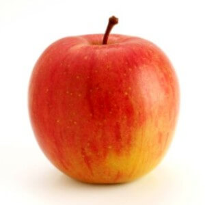
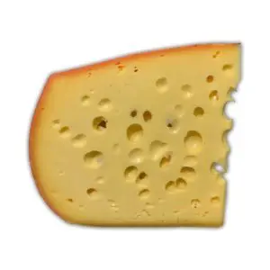
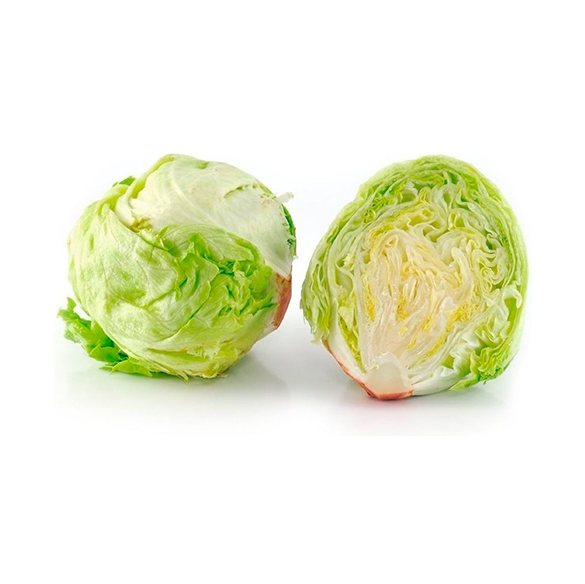
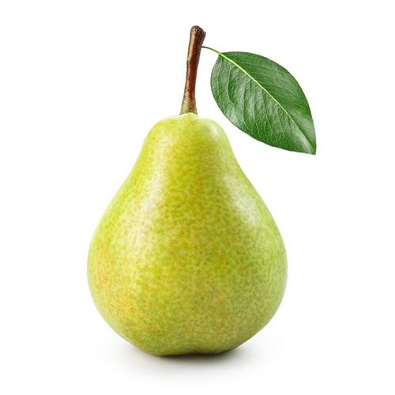

¿Cuál es la etiqueta principal utilizada para crear una tabla en HTML?
la etiqueta principal para crear una tabla en html es table
¿Qué etiqueta se utiliza para definir una fila en una tabla?
la etiqueta que se utiliza para definir una fila es tr
¿Cuál es la etiqueta utilizada para crear una celda de encabezado en una tabla?
para crear una celda de encabezado es la etiqueta th
¿Cuál es la etiqueta utilizada para crear una celda de datos en una tabla?
la etiqueta utilizada para crear una celda de datos en una tabla es td
¿Qué atributo se utiliza para especificar cuántas columnas debe abarcar una celda?
el atributo que se utiliza para especificar cuantas columnas debe abracr una celda es colspan=x
¿Qué atributo se utiliza para especificar cuántas filas debe abarcar una celda?
el atributo que se utiliza para especificar cuantas filas debe abarcar una celda es rowspan=X
Si necesitamos crear una tabla con 10 filas ¿qué etiqueta y cuántas veces se debe utilizar para definir las filas?
si necesitamos crear una tabla con 10 filas utilizariamos 10 tr para crearlas.
PRACTICA
TABLA 1 Realizar una tabla que contenga 5 alimentos y por cada uno de ellos se debe visualizar: nombre, calorías, tipo (fruta, verdura, lácteos, etc), imagen.
| alimento | calorias (100g) | tipo | imagen |
|---|---|---|---|
| manzana | 52 | fruta |  |
| banana | 91 | fruta | |
| queso | 291 | lacteo |  |
| lechuga | 15 | verdura |  |
| pera | 50 | fruta |  |
Realizar una tabla de seis pilotos según la estructura definida en: https://actc.org.ar/tc/resultados.html
| posicion | numero | piloto | marca | vueltas | tiempo | diferencia |
|---|---|---|---|---|---|---|
| 1 | 1 | werner,mariano | 30 | 41:47.494 | - | |
| 2 | 19 | ciantini, diego | 30 | 41:47.868 | 0.374 | |
| 3 | 6 | lambiris, mauricio | 30 | 41:51.295 | 3.801 | |
| 4 | 157 | De Benedictis , Juan B | 30 | 41:52.639 | 5.145 | |
| 5 | 79 | Chapur, Facundo | 30 | 41:54.178 | 6.684 | |
| 6 | 197 | Quijada, Marcos | 30 | 41:54.544 | 7.050 |